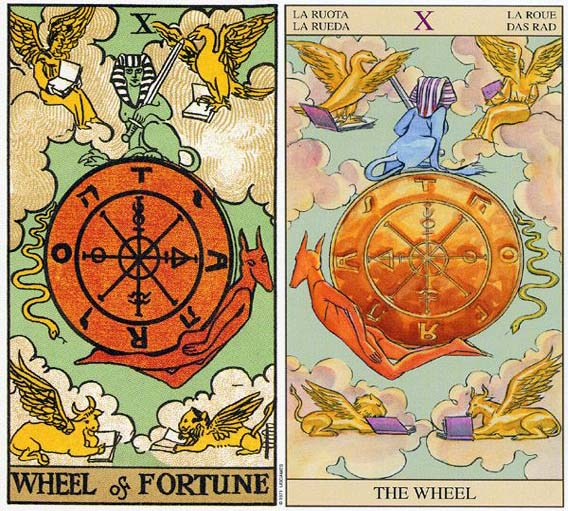

塔罗牌命运之轮（The Wheel of Fortune）解释
相关语：轮回 对应星象：月亮
命运之轮 WHEEL OF FORTUNE 代表改变，顺利迈向成功。逆位的代表也是改变，不过是面临困难，要回到隐士反省的课题上。
命运之轮意味着你境遇的改变。观察这个改变，并留意它的模式。
这张牌中所画的生命之轮持续在转动中，事情可能变好，也可能变坏。这张牌角落处的四种图案代表生命的四种元素，或四种对待生命的方法——老鹰代表水；长翅膀的狮子代表火；长翅膀的公牛代表土；天使代表空气。它们是黄道带上面四种固定的象征符号，分别为天蝎座（老鹰）、狮子座（狮子）、金牛座（公牛）、水瓶座（天使）。它们各持一本书，代表它们从各自的观点在学习有关人生的事情。
它们全被画成黄色的，因为虽然你在心智上知道这四项元素，但还没有完全理解。它们会在世界牌中再度出现，而且画成完整的色彩，因为他们已经被理解，而且成功的被结合了。在命运之轮上你可能已经看见了这四种元素的存在，但你尚未成功地将它们加以融合。
命运之轮表示：在你尝试将生命所呈现的改变，加以平衡的过程中，所学到的教训。这轮盘不断在转动，对于轮盘上的某种状态或某个时刻，你可能会喜欢、可能会不喜欢，然而它都会过去，因为生命本就变化无常。你可能会很享受某个特别的时光，并希望它能持续下去。不过，在怎么样，事情总是会改变的。
蛇代表塞特（Set），这位埃及的黑暗之神，掌管着死亡和衰败。塞特大部分的活动都会被导向（以负面或敌意的方式）奥塞瑞斯（Osiris）和何露斯（Horus）——代表生产力和秩序的神祗。塞特代表的是纷乱和衰败，不断试图要减低宇宙的秩序。
塞特随着轮盘往下转，而另一端随着轮盘往上升的则是安努比斯（Anubis）。安努比斯是死亡灵魂的导师，因此也是新生命的开始。安努比斯提供庇护，特别是在精神上的庇护。从死亡走向重生；从改变而找到崭新的机会。
轮盘上方是带剑的狮身人面兽，它的形体是一半人、一半狮子。而这把剑是倾斜的，暗示事情可能并不如你起初所预料的那么容易理解。狮身人面兽代表唯有那些机警行事的人，才可能将秘密揭发，他们是那种能看穿生命表象的人，他们知道在目前所发生的事情及导因当中，都蕴藏着极为可贵的知识。
藉由超越现况看穿事情的导因，你就可以多了解一些因果循环的道理。它本身就是一个课题，而且这个课题也出现在正义牌中。狮身人面兽会护卫这样的知识。，不让那些想利用它，却又不尊重它的力量的人接近它。
命运之轮（The Wheel of Fortune）牌面解释
牌面上命运之轮上面是象征天使的斯芬克斯，下面是魔鬼，四周围绕着象征命运中的各种境遇的女神、天鹅、毒蛇等。你的命运有如那命运之轮在塔罗牌中不停的转动，时而好时而坏，这是 一种公平的循环。命运之轮也许会在你喜欢的角度停下来，这使你有不可思议的好运气；而它也会在你不喜欢的角度停下，你就会倒霉。不管你愿意与否，命运就是如此无情，况且生命本身就是处在不断的变化之中，这就使你的生命中充满了挑战和刺激。
解牌时，要抓住“命运”就要先理解什么是“变化”，相信没有绝对的事情就可以了。不过，随着你学习的深入，就会发现“命运之轮”蕴藏的很多奥秘。
命运之轮（The Wheel of Fortune）正位解释
幸运、好时机到来、非富即贵、善于随机应变、有望升职、命中注定的相逢、一见钟情、婚姻幸福
当牌面正立时，你会发现以前所付出的无谓努力，现在反而成了你前进的动力，先前的付出终于有了回报。命运之轮是由命运女神转动的，所以你俩之前的风风雨雨都将过去，关系将进入稳定的发展阶段。
命运之轮（The Wheel of Fortune）逆位解释
劣势、时机不好、生活困苦、毫无头绪、情况恶化、工作易出错、停止前进、失恋、恋情短暂
当牌面倒立时，命运之轮正转到了你人生最低迷的时刻，也许你有些无法接受，但是若能以平常心来看待，这无疑是你成长的最好时机，需要认真面对。感情方面所受到的挫折近乎让你崩溃，然而你还在不断努力。虽然现在你面前是无数的荆棘，但坚持过去将是平坦的大道。
大体上的意义
生命是变化无常的，当牌面上的命运之轮是正立时，改变似乎是有利的；而当它倒立时，改变又似乎是有害的。我利用“似乎”这种字眼，因为它只是改变，而似乎有害的改变，事实上可能会是一种祝福。
通常命运之轮象征你生命境遇的改变。或许你并不了解这些改变的原因，不过在这里，你如何因应改变是比较重要的。你要迎接生命所提供给你的机会，还是要抗拒改变呢？此牌正立时就是在告诉你，要去适应这些改变。
就普通的角度来看，命运之轮暗示生活上的改变。你的事业正有起色，或某个两性关系正变得更充实。
倒立的命运之轮
我们都希望拥有越来越好的人生，并且可以一直保持如此，然而如果挑战一直没出现的话，我们就很难学习到什么。当命运之轮倒立时，所发生的改变可能是比较困难的。它暗示要努力对抗这些事件，而且通常都是徒劳无功。宇宙中蕴含着比每一个个体还要伟大的力量，所以我们必须要努力去理解，这项改变到底要教会我们什么。
或许在你的生活中会有一种重复的模式，这可能意味着生命再度以同一种形式的问题，来展现其挑战性，好让你学会此问题中的教训。季节总是在更替着，而生命所展现的机会却越来越少，因此你更应好好反省过去的所作所为。
找到重返隐士牌的时候，好好反省什么是你生命中再也不需要的东西。倒立的命运之轮只是要减少你在隐士牌中就应该丢掉的东西。
这是一个检视你生命当中，何者是有用、何者是不需要之物的时刻，并要开开心心的让这些不再需要的东西离你而去。重新回到隐士牌，花点时间思索其课题，或许你就能摆脱过去的阴影，影响崭新的未来了。
两性关系上的意义
命运之轮暗示一个两性关系日趋圆满的机会或可能性在增加。时，解释为：改善情况的机会越来越近了。我的顾客说出一件事情来证实这个论点：他的伴侣即将要完成她的医学学位，如此他们就可以去旅行，而且今后也可以拥有更好的生活品质。